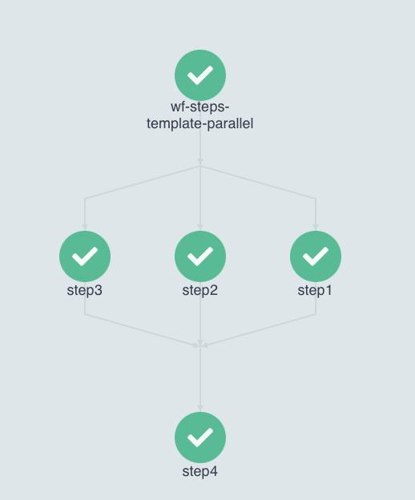
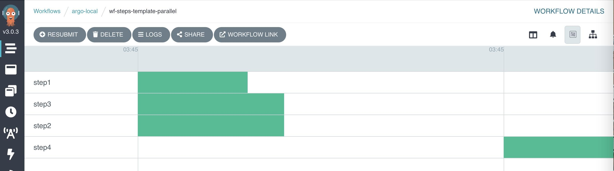

Argo workflows for Kubernetes
What is Argo?¶
Argo helps make Kubernetes more accessible to everyone. It provides services for creating workflows and jobs that build on Kubernetes. Argo is composed of the following services:
- Argo Workflows - orchestrate parallel jobs on K8. Represent workflows as DAGs and easily run compute intensive jobs.
-
Argo CD - uses git repo as the source of truth and builds the deployment env to conform to the repo. Config is via a
YAMLfile orHelmpackage. - Argo Events - dependency manager that is events based. It can hook up and listen to sources like AWS SNS, SQS, GCP PubSub and execute workflows.
Why Argo?¶
Argo is a compelling solution for those that already build on K8. Argo does not reinvent K8 features, instead builds on them. It enables implementing each step in the workflow as a container. It provides artifact management that allows to specify the output from any step as input to another. Since everything is as containers, the entire workflow, including each step and their interactions can be managed as source code (in YAML). This is called container native workflow management. Thus a workflow that runs on one Argo env will run exactly the same on another, allowing for better portability.
Argo CLI commands¶
List workflows argo list
¶
$ argo list -n <namespace> <flags> $ argo list -n flood --running # will list all running workflows in the flood namespace $ argo list -n flood --completed # for completed wf
example output:
NAME STATUS AGE DURATION PRIORITY ingest-weather-data-compass-lisflood-japan-xb7pm Running 4m 4m 0 flood-pipeline-ps8rf Running 42m 41m 0 jp-3hr-live-cgtrb Running 44m 44m 0 jp-3hr-hist-lc89r Running 2d 2d 0
Create / submit workflow using kubectl
¶
You can use argo CLI or kubectl to submit or create workflows.
(base) ➜ ~ k create -n argo-local -f wf-resource-template-localfile.yaml workflow.argoproj.io/wf-resource-tmpl-55s7b created
Argo workflow definition files¶
Below is a sample argo workflow from argo doc website. A template starts by declaring the version it is based off, followed by kind and metadata (name, etc). The spec is the most important part. Spec in-turn has two main parts, entrypoint and templates.
apiVersion: argoproj.io/v1alpha1 kind: Workflow metadata: generateName: hello-world- # Name of this Workflow spec: entrypoint: whalesay # Defines "whalesay" as the "main" template templates: - name: whalesay # Defining the "whalesay" template container: image: docker/whalesay command: [cowsay] args: ["hello world"] # This template runs "cowsay" in the "whalesay" image with arguments "hello world"
The templates section accepts an array of objects. In Yaml, you prefix each element in an array of objects with a -. For, an array of elements, you enclose elements within [] in a single line or in a broken line.
Argo has the following template types:
- Container: specs to schedule a container. This follows the same spec used by K8s. So you can cross use the specs
-
Script: convenience wrapper around a container and follows the same spec. It has an additional
scriptfield which you can specify which file to be executed. - Resource: template to modify and operate on K8s resources
- Suspend: to suspend operations
Container template¶
An example container template is shown below. Notice the container object within the templates section of the spec which defines this is a container template.
apiVersion: argoproj.io/v1alpha1 kind: Workflow metadata: generateName: wf-container-templ- spec: entrypoint: container-template templates: - name: container-template container: image: python:3.8-slim command: [echo] args: ["Hello, from within container running argo workflow"]
Script template¶
A script template inherits from container template. It is a convenience wrapper to allow execution of scripts like Python. Note the script object which takes up the place of container:
apiVersion: argoproj.io/v1alpha1 kind: Workflow metadata: generateName: wf-script-tmpl- spec: entrypoint: script-template templates: - name: script-template script: image: python:3.8-slim command: [python] source: | print("This script is embedded into the template and is executed")
In the case above, the Python script is embedded right into the workflow yaml file.
Resource template¶
A resource template is used to act on K8s or Argo resources, such as create child workflows. As an example below, we write a resource template to spawn another argo workflow that executes a Python script (using a script template). Notice the resource object within the template section of the workflow yaml. The manifest field takes an entire script template. There is one small caveat - the metadata uses name instead of generateName.
apiVersion: argoproj.io/v1alpha1 kind: Workflow metadata: generateName: wf-resource-tmpl- spec: entrypoint: resource-template templates: - name: resource-template resource: action: create manifest: | apiVersion: argoproj.io/v1alpha1 kind: Workflow metadata: name: wf-res-spawn spec: entrypoint: script-template templates: - name: script-template script: image: python:3.8-slim command: [python] source: | print("WF spawned by another res wf.")
Template invocation¶
Argo provides invoker templates that can invoke other workflows. There are two types of invoker templates:
- Steps: Defines a list of steps. Inner steps will run in parallel and outer lists will run sequentially
- DAG: Defines the tasks in a directed acyclic graph. A DAG specifies the interdependencies between tasks. This allows Argo to know which tasks can be run sequentially and which in parallel.
Steps template¶
The steps template resembles other templates seen so far, with the steps object in place of resource or script. The steps object accepts an array of objects, each with a name and template property. In the example below, the step template defines 3 steps, followed by a script template that has the actual logic for each of the steps.
apiVersion: argoproj.io/v1alpha1 kind: Workflow metadata: name: wf-steps-template-serial spec: entrypoint: steps-template templates: - name: steps-template steps: - - name: step1 template: task-template - - name: step2 template: task-template - - name: step3 template: task-template - name: task-template script: image: python:3.8-slim command: [python] source: | print("Task - hello")
Outer steps: Note the double dash - - prefix for each of the step element in the template. The double dash signify these are outer tasks and by design, the execute in serial.
Inner steps: Parallel exec: In the case above, all the steps can execute in parallel as there is no inter-dependency between them. To make them execute in parallel, you remove a dash and indent the step as shown below:
apiVersion: argoproj.io/v1alpha1 kind: Workflow metadata: name: wf-steps-template-parallel spec: entrypoint: steps-template templates: - name: steps-template steps: - - name: step1 # outer step template: task-template - name: step2 # inner step (single dash) template: task-template - name: step3 # inner step template: task-template - - name: step4 # outer step template: task-template - name: task-template script: image: python:3.8-slim command: [python] source: | print("Task - hello")
When executed, the workflow looks like below. Note that steps1, 2, and 3 can run in parallel.

and the timeline tab looks like below:

Suspend template¶
This template can be used to add a pause / sleep timer between steps in a workflow. See example below:
apiVersion: argoproj.io/v1alpha1 kind: Workflow metadata: name: wf-suspend-template spec: entrypoint: steps-template templates: - name: steps-template steps: - - name: step1 # outer step template: task-template - name: step2 # inner step (single dash) template: task-template - - name: delay # adds the delay template: suspend-template - - name: step4 # outer step template: task-template - name: task-template script: image: python:3.8-slim command: [python] source: | print("Task - hello") - name: suspend-template suspend: # The suspend template duration: "10s"
DAG template¶
The DAG template solves the same workflow representation as the steps template. Instead of the you specifying which tasks to run in sequence or parallel, in a DAG, you flip the problem and specify which tasks have a dependency on which other task. The argo executor then attempts to run all tasks in parallel, except when blocked by a dependency. In a DAG, the steps are now called tasks.
Below is an example of a DAG that produces a diamond pattern workflow:
apiVersion: argoproj.io/v1alpha1 kind: Workflow metadata: name: wf-dag-template spec: entrypoint: dag-template templates: - name: dag-template dag: tasks: - name: task1 template: task-template - name: task2 template: task-template dependencies: [task1] - name: task3 template: task-template dependencies: [task1] # makes a binary branch pattern - name: task4 template: task-template dependencies: [task2, task3] # closes dag with a diamond pattern - name: task-template script: image: python:3.8-slim command: [python] source: | print("Task - hello")

Resources¶
- Medium.com: What is Argo and how it works on GKE
- Argo blog: Introductory article.
- Argo version on Dev cloud: 3.3.6